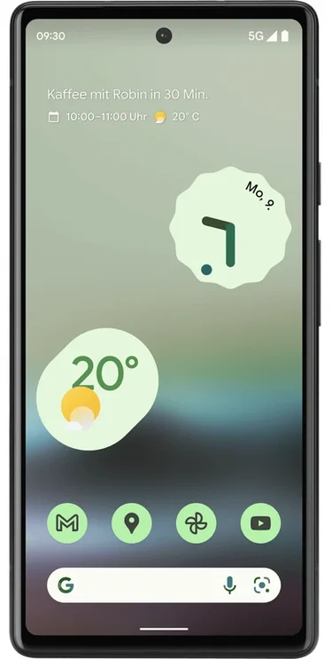
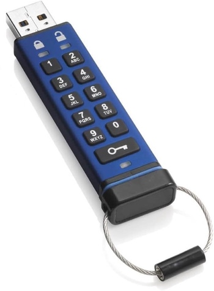
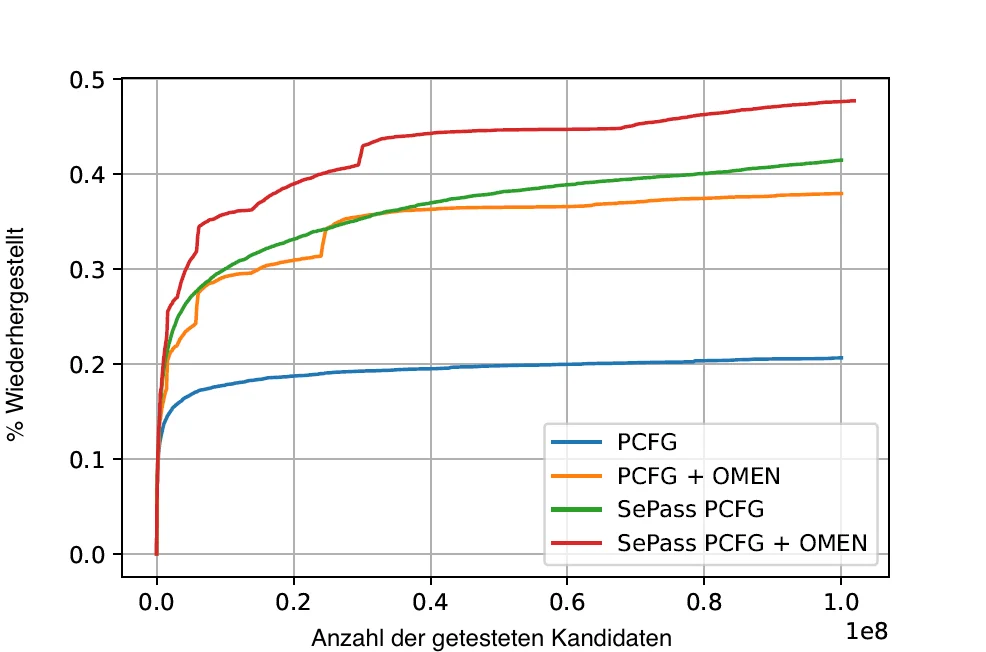

[HTML] https://delors.github.io/sec-passwortsicherheit/folien.de.md.html
[PDF] https://delors.github.io/sec-passwortsicherheit/folien.de.md.html.pdf
Bei der Erstellung der Unterlagen wurden KI Assistenten (insbesondere Claude aber ggf. auch ChatGPT, Ollama mit Gemma/LLama/Qwen oder OpenCode mit Kimi/Qwen/Deepseek...) unterstützend eingesetzt. Dies erfolgte insbesondere zur Unterstützung bei der Generierung von Grafiken (d. h. SVG Dateien), oder um sich Übersichtstabellen generieren zu lassen. Weiterhin wurde KI zur allgemeinen Qualitätssicherung eingesetzt. Inhalte, die ggf. von der KI vorgeschlagen wurden, wurden im Falle der Übernahme explizit validiert und angepasst.


Hintergrund
Obwohl an vielen Stellen versucht wird Passwörter aus vielen Gründen zurück zu drängen, so ist die Verwendung noch allgegenwärtig und in machen Bereichen ist auch nicht unmittelbar eine Ablösung zu erkennen.
Biometrie ist zum Beispiel in machen Bereichen kein Ersatz für Passwörter und wird - wenn überhaupt - nur ergänzend genommen. So ist es zum Beispiel im deutschen Recht erlaubt/möglich einem Beschuldigten sein Smartphone bei Bedarf vor das Gesicht zu halten, um es zu entsperren (Stand 2025). Je nach Qualität des Fingerabdrucksensors können ggf. auch genommene Fingerabdrücke verwendet werden. Möchte der Beschuldigte jedoch das Passwort nicht freiwillig nennen, dann besteht keine direkte weitere Handhabe.
Microsoft said hackers working for the Russian government breached its corporate networks recently and stole email from executives and some employees to find out what the company knew about them. The tech company said the breach was not due to any flaw in its software, but rather began with a “password spraying.” The technique worked on what Microsoft said was an old test account, and the hackers then used the account’s privileges to get access to multiple streams of email.
—19. Januar 2024: The Washington Post; Joseph Menn
Researchers Uncover How Outlook Vulnerability Could Leak Your NTLM Passwords
A now-patched security flaw in Microsoft Outlook could be exploited by threat actors to access NT LAN Manager (NTLM) v2 hashed passwords when opening a specially crafted file.
[...] Varonis security researcher Dolev Taler, who has been credited with discovering and reporting the bug, said NTLM hashes could be leaked by leveraging Windows Performance Analyzer (WPA) and Windows File Explorer. These two attack methods, however, remain unpatched.
"What makes this interesting is that WPA attempts to authenticate using NTLM v2 over the open web," Taler said.
—29. Januar 2024: The Hacker News
59 Prozent aller Passwörter in unter 60 Minuten knackbar
Forscher haben per Brute-Force-Methode mit einer Nvidia Geforce RTX 4090 Millionen von Passwörtern aus dem Darknet geknackt.
[...] Sicherheitsforscher von Kaspersky haben untersucht, wie schnell sich gängige Passwörter mit einer modernen GPU vom Typ Nvidia Geforce RTX 4090 knacken lassen. Durchgeführt wurde die Untersuchung anhand einer Datenbank mit 193 Millionen echten Nutzerpasswörtern, die die Forscher aus dem Darknet bezogen. Sämtliche Passwörter lagen dabei in Form von gesalzenen MD5-Hashes vor. [...]
—21. Juni 2024: golem.de
An AI just cracked your password.
We used [...] PassGAN to run through a list of 15,680,000 passwords. [...]
Time It Takes Using AI to Crack Your Password
# of Chars
Numbers Only
Lowercase Letters
Lower- & Uppercase Letters
Numbers, Upper- & Lowercase Letters
Numbers, Upper- & Lowercase Letters, Symbols
4
Instantly
Instantly
Instantly
Instantly
Instantly
5
Instantly
Instantly
Instantly
Instantly
Instantly
6
Instantly
Instantly
Instantly
Instantly
4 Seconds
7
Instantly
Instantly
22 Seconds
42 Seconds
6 Minutes
8
Instantly
3 Seconds
19 Minutes
48 Minutes
7 Hours
9
Instantly
1 Minutes
11 Hours
2 Days
2 Weeks
10
Instantly
1 Hours
4 Weeks
6 Months
5 Years
11
Instantly
23 Hours
4 Years
38 Years
356 Years
...
...
...
...
...
...
# of Chars
Numbers Only
Lowercase Letters
Lower- & Uppercase Letters
Numbers, Upper- & Lowercase Letters
Numbers, Upper- & Lowercase Letters, Symbols
...
...
...
...
...
...
12
25 Seconds
3 Weeks
289 Years
2K Years
30K Years
13
3 Minutes
11 Months
16K Years
91K Years
2M Years
14
36 Minutes
49 Years
827K Years
9M Years
187M Years
15
5 Hours
890 Years
47M Years
613M Years
14Bn Years
16
2 Days
23K Years
2Bn Years
26Bn Years
1Tn Years
17
3 Weeks
812K Years
539.72M Years
2Tn Years
95Tn Years
18
10 Months
22M Years
7.23Bn Years
96Tn Years
6Qn Years
—2023: Home Security Heroes
Auf der Webseite https://www.securityhero.io/ai-password-cracking/ wird ein Tool angeboten, das eine Schätzung vornimmt wie lange eine AI braucht, um das Passwort zu knacken.
Empfohlene Tests:
start
Start
StartStart
startstart!
Wie bewerten Sie die Einschätzungen dieses Tools?
Check Your Accounts: 10 Billion Passwords Exposed in Largest Leak Ever
The "RockYou2024" database includes almost 10 billion passwords pulled from a mix of old and new data breaches. Here's how to check if yours are at risk.
[...]Researchers at Cybernews have uncovered a massive trove of nearly 10 billion passwords on a popular hacking forum in what they're calling "largest password compilation" ever.
The file, titled rockyou2024.txt, was posted on July 4 by someone going by the name ObamaCare and contains a mind-boggling 9,948,575,739 unique plaintext passwords. The user only joined the forum in late May, but they've posted data from other breaches, too. [...]
—6. Juli 2024: PCMag
10.000 Kombinationen
70⁸ = 576.480.100.000.000 ≈ 5,7 × 10¹⁴ Kombinationen
2.000⁶ = 6,4 × 10¹⁹ Kombinationen
100.000⁴ = 1 × 10²⁰ Kombinationen
84¹⁶ = 6,14 × 10³⁰ Kombinationen
Wörterbücher
Verzeichnisse (z. B. Postleitzahlen, Städte, Straßennamen)
Leaks
(Sammlungen von realen Passwörtern, die meist von Hackern veröffentlicht wurden.)
Rockyou
Sony
etc.
Wie ist die Qualität der folgenden Passwörter zu bewerten in Hinblick darauf, wie aufwändig es ist das Passwort ggf. wiederherzustellen:
Donaudampfschifffahrt
Passwort
ME01703138541
2wsx3edc4rfv
Haus Maus
iluvu
Emily18
MuenchenHamburg2023!!!!
hjA223dn4fw"üäKßß k`≤-~ajsdk
Baum Lampe Haus Steak Eis Berg
Eine Hashfunktion akzeptiert eine beliebig lange Nachricht als Eingabe und gibt einen Wert fixer Größe zurück: .
Eine Änderung eines beliebigen Bits in sollte mit hoher Wahrscheinlichkeit zu einer Änderung des Hashes führen.
Kryptographische Hashfunktionen werden für die Speicherung von Passwörtern verwendet.
Kollisionen bei Hashes
Wenn ein Passwort „nur“ als Hash gespeichert wird, dann gibt es zwangsläufig Kollisionen und es kann theoretisch passieren, dass ein Angreifer (zufällig) ein völlig anderes Passwort findet, das bei der Überprüfung des Passworts akzeptiert wird. Die Konstruktion kryptografischer Hashfunktionen stellt jedoch sicher, dass dies in der Praxis nicht auftritt. Sollte jedoch eine „normale Hashfunktion“ genommen werden, dann ist dieses Szenario durchaus realistisch.
Hashcat 6.2.6. Mode | Hash | RTX 1080Ti (250 W) | RTX 2080TI (260 W) | RTX 3090 (350 W) | RTX 4090 (450 W) | RTX 5090 (575 W) |
|---|---|---|---|---|---|---|
25700 | Murmur | 643700.0 (643 GH/s) | 819500.0 (819 GH/s) | |||
23 | Skype | 21330.1 | 27843.1 | 37300.7 | 84654.8 | 116900.0 |
1400 | SHA2-256 | 4459.7 | 7154.8 | 9713.2 | 21975.5 | 28353.3 |
10500 | PDF1.4-1.6 | 24.9 | 29.8 | 76.8 | 122.0 | 166.4 |
1800 | SHA 512 Unix (5000 Iterations) | 0.2 | 0.3 | 0.5 | 1.2 | 1.4 |
13723 | Veracrypt SHA2- 512 + XTX 1536Bit | 0.0004 | 0.0006 | 0.0009 | 0.002 (2000 H/s) | 0.002 (2278 H/s) |
Quellen:
Zeit für vollständigen Brute-Force Angriff
Zur Schlüsselableitung bzw. zum Hashen von Passwörtern wurden spezialisierte Funktionen entwickelt. Zum Beispiel: PBKDF2, Scrypt, Bcrypt und die Argon2 Familie. Diese wiederstehen gängigen Angriffen.
PBKDF2 verwendet zum Beispiel beim Hashing von Passwörtern klassische Basisalgorithmen (z. B. SHA-256) und wiederholt diese mehrfach (ggf. viele hunderttausend Male), um die Laufzeit zu verlängern und es für Angreifer schwieriger zu machen.
Diese Algorithmen sind parametrisierbar, um sie an verschiedene Zwecke anpassen zu können. Je nach Parametrisierung sind diese so rechenintensiv, dass sie z. B. nicht für Webanwendungen mit vielen Nutzern geeignet sind.
Parametrisierungen, die die Laufzeit und den Speicherbedarf so stark erhöhen, dass eine Verwendung in Webanwendungen nicht mehr sinnvoll ist, können z. B. ideal sein zum Schutz von Dateien, Containern oder lokaler Festplatten.
Beobachtung/Problem
Werden Passwörter direkt mit Hilfe einer kryptografischen Hashfunktion gehasht, dann haben zwei Nutzer, die das gleiche Passwort verwenden, den gleichen Hash.
User | Hash |
|---|---|
Alice | sha256_crypt.hash('DHBWMannheim',salt='',rounds=1000) = $5$rounds=1000$$lb/CwYgN/xR9dqYuYxYVtWkxMEh.VK.QOC9IKmy9DP/ |
Bob | sha256_crypt.hash('DHBWMannheim',salt='',rounds=1000) = $5$rounds=1000$$lb/CwYgN/xR9dqYuYxYVtWkxMEh.VK.QOC9IKmy9DP/ |
Lösung
Passwörter sollten immer mit einem einzigartigen und zufälligen „Salt“ gespeichert werden, um Angriffe mittels Regenbogentabellen zu verhindern.
User | Hash |
|---|---|
Alice | sha256_crypt.hash('DHBWMannheim',salt='0123456',rounds=1000) = $5$rounds=1000$0123456$66x8MB.qev25coq9OVrD1lr1ZGJJelAzOV... |
Bob | sha256_crypt.hash('DHBWMannheim',salt='1234567',rounds=1000) = $5$rounds=1000$1234567$LxD/hg29N9KYpNdFMW69Kk65BLkVLlzlSE... |
Rainbow Tables
Eine Rainbow Table (Regenbogentabelle - Verwendung jedoch nicht gängig) bezeichnet eine vorberechnete Tabelle, die konzeptionell zum einem Hash ein jeweilig dazugehörendes Passwort speichert und einen effizienten Lookup ermöglicht. Dies kann ggf. die Angriffsgeschwindigkeit sehr signifikant beschleunigen, auch wenn die Tabellen sehr groß sind und ggf. in die Terabytes gehen.
Aufgrund der allgemeinen Verwendung von Salts sind Angriffe mit Hilfe von Regenbogentabellen heute (fast nur noch) von historischer Bedeutung.
Ein Salt sollte ausreichend lang sein (zum Beispiel mind. 16 Zeichen oder 16 Byte).
Ein Salt darf nicht wiederverwendet werden.
Ein Salt wird am Anfang oder am Ende an das Passwort angehängt bevor selbiges gehasht wird.
Ein Salt unterliegt (eigentlich) keinen Geheimhaltungsanforderungen.
Speicherung von Salts
In Webanwendungen bzw. allgemein datenbankgestützten Anwendungen wird der Salt häufig in derselben Tabelle gespeichert in der auch der Hash des Passworts gespeichert wird. Im Falle von verschlüsselten Dateien wird der Salt (unverschlüsselt) mit in der Datei gespeichert.
(In Normen bzw. in anderer Literatur wird häufig statt Pepper Secret Key verwendet.)
Wie ein Salt geht auch der Secret Key in den Hashvorgang des Passworts ein.
Der Secret Key wird jedoch nicht mit den Hashwerten der Passworte gespeichert.
Ein Secret key kann zum Beispiel in einem Hardwaresicherheitsmodul (z. B. Secure Element oder TPM Chip) gespeichert werden.
Gel. wird der Secret Key bzw. ein Teil davon auch im Code bzw. einer Konfigurationsdatei gespeichert.
Der Secret Key sollte zufällig sein.
Wie ein Salt sollte auch auch Secret Key mind. 16 Byte lang sein.
Diese Länge ist erforderlich um einen Brute-Force Angriff auf den Secret Key zu verhindern, sollte dem Angreifer zu einem Hash und Salt auch noch das Klartext Passwort bekannt sein.
Der Secret Key sollte pro Instanziierung einer Anwendung einmalig sein.
z. B. verwendete von LUKS2
basierend auf Blowfish; z. B. verwendet in OpenBSD
z. B. (ergänzend) verwendet für das Hashing von Passwörtern auf Smartphones
z. B. moderne Linux Distributionen
Ethereum Wallets
Dient der Ableitung eines Schlüssels aus einem Passwort.
Das Ergebnis der Anwendung der PBKDF2 wird zusammen mit dem Salt und dem Iterationszähler für die anschließende Passwortverifizierung gespeichert.
die Schlüsselableitungsfunktion hat 5 Parameter
PRF, Password, Salt, c, dkLen:
- PRF:
eine Pseudozufallsfunktion; typischer Weise ein HMAC[1]
- Password:
das Masterpasswort
- Salt:
der zu verwendende Salt
- c:
Zähler für die Anzahl an Runden
- dkLen:
die Bitlänge des abgeleiteten Schlüssels (derived key length)
Die PBKDF2 ist nicht für das eigentliche Hashen zuständig sondern „nur“ für das Iterieren der Hashfuntion und das eigentliche Key-stretching.
Laut OWASP sollten zum Beispiel für PBKDF2-HMAC-SHA512 600.000 Iterationen verwendet werden.
(HMAC = Hash-based Message Authentication Code)
Im Fall von PBKDF2 ist das Passwort der HMAC Schlüssel (Key) und das Salz die Nachricht .
Beispielcode
1from passlib.crypto.digest import pbkdf2_hmac2pbkdf2_hmac("sha256",3secret=b"MyPassword",4salt=b"JustASalt",5rounds=1, # a real value should be >> 500.0006keylen=32 )
In der konkreten Anwendung ist es ggf. möglich das Secret auch zu Salzen und den Salt aus einer anderen Quellen abzuleiten.
Bei einer Runde und passenden Blockgrößen ist das Ergebnis der PBKDF2 somit gleich mit der Berechnung des HMACs wenn der Salt um die Nummer des Blocks \x00\x00\x00\x01 ergänzt wurde.
Implementierung in Python
1import hashlib2pwd = b"MyPassword"3stretched_pwd = pwd + (64-len(pwd)) * b"\x00"4ikeypad = bytes(map(lambda x : x ^ 0x36 , stretched_pwd)) # xor with ipad5okeypad = bytes(map(lambda x : x ^ 0x5c , stretched_pwd)) # xor with opad67hash1 = hashlib.sha256(ikeypad+b"JustASalt"+b"\x00\x00\x00\x01").digest()8hmac = hashlib.sha256(okeypad+hash1).digest()
Ergebnis
1hmac = b'h\x88\xc2\xb6X\xb7\xcb\x9c\x90\xc2R\xf8\xb1\xf7\x102\xb2L\x8a\xba\xfb\x9e|\x16\x87\x87\x0e\xad\xa1\xe1:9\xca'
HMAC ist auch direkt als Bibliotheksfunktion verfügbar.
1import hashlib2import hmac34hash_hmac = hmac.new(5b"MyPassword",6b"JustASalt"+b"\x00\x00\x00\x01",7hashlib.sha256).digest()89hash_hmac =10b'h\x88\xc2\xb6X\xb7\xcb\x9c\x90\xc2R...11\x16\x87\x87\x0e\xad\xa1\xe1:9\xca'
Der Wert:
b"\x00\x00\x00\x01"ist die Blocknummer (hier: 1).
Angriff auf LUKS2 mit Argon2
[…] The choice of Argon2 as a KDF makes GPU acceleration impossible. As a result, you’ll be restricted to CPU-only attacks, which may be very slow or extremely slow depending on your CPU. To give an idea, you can try 2 (that’s right, two) passwords per second on a single Intel(R) Core(TM) i7-9700K CPU @ 3.60GHz. Modern CPUs will deliver a slightly better performance, but don’t expect a miracle: LUKS2 default KDF is deliberately made to resist attacks. […]
—Elcomsoft LUKS2 with Argon2
Schwachstellenbewertung
Ihnen liegt eine externer Festplatte/SSD mit USB Anschluss vor, die die folgenden Eigenschaften hat:
Die Daten auf der SSD/FP sind hardwareverschlüsselt.
Die Verschlüsselung erfolgt mit XTS-AES 256.
Es gibt eine spezielle Software, die der Kunde installieren muss, um das Passwort zu setzen. Erst danach wird die Festplatte „freigeschaltet“ und kann in das Betriebssystem eingebunden werden. Davor erscheint die SSD/FP wie ein CD Laufwerk auf dem die Software liegt.
Die SSD/FP ist FIPS zertifiziert und gegen Hardwaremanipulation geschützt; zum Beispiel eingegossen mit Epoxidharz.
Das Passwort wird von der Software gehasht und dann als Hash an den Controller der externen FP/SSD übertragen.
Im Controller wird der übermittelte Hash direkt zur Autorisierung des Nutzers verwendet. Dazu wird der Hash mit dem im EPROM hinterlegten verglichen.
Diskutieren Sie die Sicherheit der Passwortvalidierung und wie diese ggf. zu verbessern wäre.
Von Menschen vergebene Passwörter basieren häufig auf Kombinationen von Wörtern aus den folgenden Kategorien:
Pins: 1111, 1234, 123456, …
Tastaturwanderungen (keyboard walks): asdfg, q2w3e4r5t, …
Patterns: aaaaa, ababab, abcabcabc, …
Reguläre Wörter aus Wörterbüchern: Duden, Webster, …
Kontextinformationen:
szenetypisch: acab, 1888, 1488[2], oder bestimmte Marken (z. B. Gucci, Ferrari), …
privates Umfeld: Namen von Kindern, Eltern, Hunden, Geburtsort, Adresse, …
Eine gute Quelle für das Studium von Passwörtern sind sogenannte Leaks oder auch Listen mit gängigen Passwörtern. Zum Beispiel Becker's Health IT 2023:
123456
password
123456789
12345
12345678
qwerty
1234567
111111
1234567890
123123
abc123
1234
password1
iloveyou
1q2w3e4r
000000
qwerty123
zaq12wsx
dragon
sunshine
princess
letmein
654321
monkey
27653
1qaz2wsx
123321
Hinweise
Die Listen ändern sich in der Regel von Jahr zu Jahr nicht wesentlich.
Die konkrete Methodik ist oft fragwürdig; in der Gesamtheit aber dennoch aussagekräftig.
Analyse auf Grundlage des „berühmten“ Rockyou-Lecks.
Hier haben wir alle Kleinbuchstaben auf l, Großbuchstaben auf u, Ziffern auf d und Sonderzeichen auf s abgebildet.
llllllll | 4,8037% | lllllllldd | 1,4869% | dddddddddddd | 0,2683% | ddddddll | 0,1631% |
llllll | 4,1978% | lllllld | 1,3474% | lllddddd | 0,2625% | lllllls | 0,1615% |
lllllll | 4,0849% | llllllld | 1,3246% | lllllllllldd | 0,2511% | ddddlll | 0,1613% |
lllllllll | 3,6086% | llllllllllll | 1,3223% | llllllllllllllll | 0,2340% | dlllllll | 0,1583% |
ddddddd | 3,4003% | llldddd | 1,2439% | lllldddddd | 0,2322% | dllllll | 0,1575% |
dddddddddd | 3,3359% | llllldddd | 1,2109% | llddddd | 0,2270% | llllddddd | 0,1560% |
dddddddd | 2,9878% | lllllldddd | 1,1204% | uuuuuudd | 0,2189% | dddddddl | 0,1557% |
lllllldd | 2,9326% | lllllllld | 1,1168% | ddddll | 0,2169% | uuuudd | 0,1551% |
llllllllll | 2,9110% | lllllddd | 1,0633% | lddddddd | 0,2064% | lllllddddd | 0,1395% |
dddddd | 2,7243% | llllllddd | 0,9225% | ddddddddddddd | 0,2017% | ddllllll | 0,1391% |
ddddddddd | 2,1453% | llllllllld | 0,9059% | ullllldd | 0,1930% | ulllll | 0,1379% |
llllldd | 2,0395% | lllll | 0,8793% | ddddllll | 0,1905% | uuuuuuuuuu | 0,1378% |
llllllldd | 1,9092% | lllllllllllll | 0,8334% | uuuuuuuuu | 0,1886% | llllllls | 0,1374% |
lllllllllll | 1,8697% | llllld | 0,8005% | uuuuudd | 0,1815% | lllllllllld | 0,1345% |
lllldddd | 1,6420% | llllddd | 0,7759% | lllllllllddd | 0,1808% | llllllllllldd | 0,1344% |
lllldd | 1,5009% | ddddddddddd | 0,7524% | llllllllldddd | 0,1725% | … | … |
Analyse des ersten/original Rockyou Leaks.
∑ Passworte | 14.334.851 | 100% |
|---|---|---|
Pins | 2.346.591 | 16,37% |
Passworte mit Buchstaben | 11.905.977 | 83,34% |
Analyse der Passworte mit Buchstaben:
Kategorie | Absolut | Prozentual | Beispiele |
|---|---|---|---|
E-Mails | 26.749 | 0,22% | me@me.com |
Zahlen gerahmt von Buchstaben | 35696 | 0,30% | a123456a |
Leetspeak | 64.672 | 0,54% | G3tm0n3y |
Patterns | 124.347 | 1,04% | lalala |
Reguläre oder Populäre Wörter | 4.911.647 | 41,25% | princess, iloveu |
Sequenzen | 5.290 | 0,04% | abcdefghij |
keyboard walks (de/en) | 14.662 | 0,12% | q2w3e4r |
Einfache Wortkombinationen | 535.037 | 4,49% | pinkpink, sexy4u, te amo |
Komplexe Wortkombinationen | 5.983.259 | 50,25% | Inparadise, kelseylovesbarry |
<Rest> | 204.618 | 1,72% | j4**9c+p, i(L)you, p@55w0rd, sk8er4life |
Hinweise
Die Sprachen, die bei der Identifizierung der Wörter berücksichtigt wurden, waren: de, en, fr, es, pt, nl.
Populäre Wörter sind Wörter, die auf Twitter oder Facebook verwendet wurden, z. B. „iloveu“, „iluvu“, ....
Kosten und Aufwand für Passwortwiederherstellung
Sie wollen einen SHA-256 angreifen und sie haben 100 Nvidia 4090 GPUs. Jede GPU hat eine Hash-Rate von ~22GH/s (mit Hashcat 6.2.6) und benötigt ~500 Watt pro Stunde (Wh). Der verwendete Zeichensatz besteht aus 84 verschiedenen Zeichen (z. B. a-z, A-Z, 0-9, <einige Sonderzeichen>).
Wie lange dauert es, ein 10-stelliges Passwort zu ermitteln (Worst Case)?
Wie viel Geld wird es Sie kosten, ein 10-stelliges Passwort zu knacken (Worst Case), wenn 1kWh 25ct kostet?
Werden Sie im Laufe Ihres Lebens in der Lage sein, ein Passwort mit 12 Zeichen Länge zu ermitteln?
Verstehen des Suchraums
Sie haben „ganz viele“ Grafikkarten und einen sehr schnellen Hash. Sie kommen auf eine Hashrate von 1 THash/Sekunde (). Sie haben einen Monat Zeit für das Knacken des Passworts. Gehen Sie vereinfacht davon aus, dass Ihr Zeichensatz 100 Zeichen umfasst.
Berechnen Sie den Anteil des Suchraums, den Sie abgesucht haben, wenn das Passwort 32 Zeichen lang sein sollte und Sie dies wissen. Drücken Sie den Anteil des abgesuchten Raums in Relation zu der Anzahl der Sandkörner der Sahara aus. Gehen Sie davon aus, dass die Sahara ca. 70 Trilliarden () Sandkörner hat.[3]
Moderne Passwortrichtlinien (Password Policies) machen es unmöglich, ältere Leaks direkt zu nutzen.
Beispiele:
Mindestanzahl von Zeichen (maximale Anzahl von Zeichen)
Anforderungen an die Anzahl der Ziffern, Sonderzeichen, Groß- und Kleinbuchstaben
Anforderungen an die Vielfalt der verwendeten Zeichen
einige Passwörter (z. B. aus bekannten Leaks und Wörterbüchern) sind verboten
...
Passwortrichtlinien extrem: Password Game
Die wichtigsten NIST-Richtlinien für Passwörter:
Mindestlänge von 8 Zeichen.
Keine Komplexitätsanforderung. Benutzer sollten auch die Möglichkeit haben, Leerzeichen einzufügen, um die Verwendung von Phrasen zu ermöglichen. Für die Benutzerfreundlichkeit [...] kann es von Vorteil sein, wiederholte Leerzeichen in getippten Passwörtern vor der Überprüfung zu entfernen.
Reale Passwortrichtlinie eines speziellen Messengers:
Nutze 1 Großbuchstabe, 1 Kleinbuchstabe, 2 Symbole, 2 Ziffern, 4 Buchstaben, 4 Nicht-Buchstaben
Exemplarisch beobachteter Effekt, wenn die Passwörter vorher einfacher waren und der Benutzer gezwungen wurde diese zu erweitern:
Password11##
Password12!!
d. h. die Passworte werden mit möglichst geringem Aufwand erweitert.
Passwörter, die häufig eingegeben werden müssen, basieren in vielen Fällen auf „echten“ Wörtern.
Echte Wörter werden oft nicht unverändert verwendet, sondern nach einfachen Regeln umgewandelt, z. B. durch Anhängen einer Zahl oder eines Sonderzeichens, Veränderung der Groß-/Kleinschreibung, etc.
Aufgrund der „Unmöglichkeit“ eines Brute-Force-Angriffs ist Folgendes zu beachten:
Verfügbare Kontextinformationen sollten in die Auswahl/Generierung einfließen.
Es sollten nur technisch sinnvolle Passwörter getestet/generiert werden.
Es sollten keine Duplikate getestet werden.
Auswahl/Generierung von Passwörten in absteigender Wahrscheinlichkeit.
Die Auswahl/Generierung sollte effizient sein.
Technisch sinnvolle Passwörter sind solche, die die zu Grunde liegenden Passwortrichtlinien und auch weiteren technischen Anforderungen erfüllen. Zum Beispiel den von der Software verwendeten Zeichensatz (UTF-8, ASCII, ...) oder im Falle eines Smartphones/Kryptosticks die eingebbaren Zeichen.
Auf einer deutschen Standardtastatur für Macs können in Kombination mit „Shift“, „Alt“ und „Alt+Shift“ zum Beispiel 192 verschiedene Zeichen eingegeben werden – ohne auf Unicode oder Zeichentabellen zurückgreifen zu müssen.
Sollte der Algorithmus zum Generieren der Passwörter langsamer sein als die Zeit, die benötigt wird, um ein Passwort zu falsifizieren, dann beschränkt nicht mehr länger nur die Hashrate den Suchraum.
Grundlegende Werkzeuge zum „Vermischen von Wörtern“ (word mangling)
Prince
Markov-Modelle (OMEN)
Hashcat
...
Um vorhandene Kontextinformationen zu erweitern, können ggf. (frei) verfügbare Wordembeddings verwendet werden.
RelatedWords.org setzt (unter anderem) auf ConceptNet und WordEmbeddings.
Reversedictionary.org setzt auf WordNet und liefert ergänzende Ergebnisse.
OMEN lernt - zum Beispiel basierend auf Leaks - die Wahrscheinlichkeiten für das Aufeinanderfolgen von Bigrammen und Trigrammen und nutzt diese, um neue Passwortkandidaten zu generieren.
Lernt die Muster, Worte, Ziffern und verwendeten Sonderzeichen basierend auf der Auswertung von realen Leaks. Die gelernte Grammatik wird als Schablone verwendet und aus „Wörterbüchern“ befüllt. (Zum Beispiel: S → D1L3S2 → 1L3!! → 1luv!! )
Generiert Passwortkandidaten mit absteigender Wahrscheinlichkeit.
Prozeß:
Vorverarbeitung, um die Basisstrukturen und deren Wahrscheinlichkeiten zu identifizieren (z. B. zwei Ziffern gefolgt von einem Sonderzeichen und 8 Buchstaben.)
Passwortkandidatengenerierung unter Beachtung der Wahrscheinlichkeiten der Basisstrukturen und der Wahrscheinlichkeiten der Worte, Ziffern und Sonderzeichen.
(In der Originalversion wurden die Wahrscheinlichkeiten von Worten nicht beachtet; die auf GitHub verfügbare Version enthält jedoch zahlreiche Verbesserungen.)
Im ersten Schritt werden die Produktionswahrscheinlichkeiten von Basisstrukturen, Ziffernfolgen, Sonderzeichenfolgen und Alpha-Zeichenfolgen ermittelt. (Z. Bsp.: !cat123 S1L3D3)
Basis Struktur | Häufigkeit | Wahrscheinlichkeit der Produktion |
|---|---|---|
L3S1D3 | 12788 | 0.75 |
S1L3D3 | 2789 | 0.35 |
S1 | Häufigkeit | Wahrscheinlichkeit der Produktion |
|---|---|---|
! | 12788 | 0.50 |
. | 2789 | 0.30 |
@ | 1708 | 0.20 |
L3 | Häufigkeit | Wahrscheinlichkeit der Produktion |
|---|---|---|
cat | 12298 | 0.85 |
dog | 2890 | 0.15 |
D3 | Häufigkeit | Wahrscheinlichkeit der Produktion |
|---|---|---|
123 | 10788 | 0.60 |
321 | 5789 | 0.35 |
654 | 4708 | 0.25 |
Ergebnis der Analyse:
Nich-Terminale | Produktion | Wahrscheinlichkeit der Produktion |
|---|---|---|
S | passwordT | 0.7 |
S | secureT | 0.3 |
T | 123 | 0.6 |
T | 111 | 0.4 |
Ableitung:
S passwordT password123
S passwordT password111
S secureT secure123
S secureT secure111
Unterstützt Tastaturwanderungen (zum Beispiel asdf oder qwerty12345) und Passworte bestehend aus mehrerern Worten und wiederholten Worten (zum Beispiel qpqpqpq).
Im Wesentlichen Performanceoptimierungen, um PCFG schneller zu machen.
Im Wesentlichen werden zwei PCFGs gewichtet zusammengeführt (0 < alpha < 1).
Zusätzliche Wortkandidaten werden mithilfe von Worteinbettungen identifiziert. Ermöglicht es verwandte Wörter automatisch zu finden.
Example
Gegeben sein die folgenden „echten“ Passwörter:
Ferrari01
!Audi!
Mercedes88
Bugatti 666
„Offensichtliche“ Kandidaten für Basiswörter:
Porsche
Mclaren
Lamborghini
Aston Martin
Vermeidet menschliche Voreingenommenheit.
Example
Gegeben sein die folgenden „echten“ Passwörter:
Luke2017
John1976
01Mark!
„Offensichtliche“ Kandidaten für Basiswörter:
Matthew
Bible
Gospel
Vermeidet menschliche Voreingenommenheit.
Example
Gegeben sein die folgenden „echten“ Passwörter:
Luke2017
John1976
01Mark!
„Offensichtliche“ Kandidaten für Basiswörter:
Leia
Darth Vader
Palpatine
Donaudampfschifffahrt: Ist weder in Rockyou noch im Duden und auch nicht in den Corpora von Twitter und Facebook von 2022 zu finden.
Passwort: Nr. 93968 in Rockyou.
password123: Nr. 1348 in Rockyou.
2wsx3edc4rfv: So nicht in Rockyou, aber 1qaz2wsx3edc4rfv ist Nr. 143611 in Rockyou.
Haus Maus: In Rockyou ist lediglich hausmaus zu finden.
iluvu: Nr. 1472 in Rockyou.
Emily060218: Emily ist Nr. 35567 in Rockyou. Die Zahl ist ganz offensichtlich ein Datum: 6. Feb. 2018 und könnte ein Geburtsdatum, Hochzeitsdatum, oder ein für die Person vergleichbar bedeutends Datum sein.
MuenchenHamburg2023!!!!*: Das Passwort ist zwar sehr lang aber es handelt sich vermutlich um zwei - für die entsprechende Person - bedeutende Orte. Die Zahl und die Sonderzeichen sind vermutlich auf eine Passwortrichtlinie zurückzuführen.
hjA223dn4fw"üäKßß k`≤-~ajsdk: 28 Stellen basierend auf einem Zeichensatz, der vermutlich ca. 192 Zeichen pro Stelle umfasst.
Baum Lampe Haus Steak Eis Berg: Es handelt sich um ein Passwort mit 30 Stellen, das vermutlich mit Hilfe von Diceware generiert wurde und 6 Worte umfasst.
ME01703138541: Namenskürzel und Telefonnummer.
Diceware
Auch wenn dem Angreifer
bekannt ist, dass das Passwort mit Hilfe von Diceware generiert wurde,
die zugrundeliegende Wortliste vorliegt und
auch die Länge (hier 6 Worte) bekannt sein sollte,
dann umfasst der Suchraum: Passwortkandidaten. Sollte man also mit einer Geschwindigkeit von 1 Billion Hashes pro Sekunde angreifen können, dann brauch man noch immer über 7000 Jahre für das Absuchen des vollständigen Suchraums.
Beim klassischen Dicewareansatz umfasst das Wörterbuch Worte, da man mit einem normalen Würfel fünfmal Würfelt und dann das entsprechende Wort nachschlägt. Würde man zum Beispiel die folgenden Zahlen würfeln: 1,4,2,5,2. Dann würde man das Wort zur Zahl: 14252 nachschlagen.

Gegeben sei ein MD5 Hash
81dc9bdb52d04dc20036dbd8313ed055Hinweise: Das Passwort ist kurz, besteht nur aus Ziffern und ist sehr häufig.
Wenn Sie Python verwenden wollen, dann können Sie den folgenden Code als Ausgangspunkt verwenden:
1import hashlib2import binascii34hash = binascii.unhexlify ('81dc9bdb52d04dc20036dbd8313ed055')56""" In some loop do: hashlib.md5(...).digest() """
Gegeben seien folgende SHA256 Hashes
ac3160b0a933ac03d7fb269baf8443e65936aa4322881e30c60443d7dda152d5
748224afd4d37f9c3cae97bf2d38068a2ca0fabfa2f751a391bd2ac958df5403
6e609749618fa564c83d712f96706337f6a78ef9132c16bea215774c8c1382be
9d394775682dde10d89eb667f1049312d76bfcfc030a33f2598b117eb30a3966Verwenden Sie den Leak Rockyou.txt (z. B. auf https://github.com/brannondorsey/naive-hashcat/releases/download/data/rockyou.txt), um das Passwort zu finden.
Sie können diesbezüglich ein Shellscript schreiben oder ein Script in einer Sprache Ihrer Wahl; Parallelisierung ist ggf. natürlich erlaubt!
Nehmen Sie kein Passwort, dass 1:1 in einem Wörterbuch, Verzeichnis oder Leak (vgl. https://haveibeenpwned.com) vorkommt.
Nehmen Sie keine Szenepasswörter (zum Beispiel: admin, root, acab, 1312, 88, ...).
Je länger desto besser, aber keine trivialen Sätze.
Wählen Sie ein Passwort, dass Sie sich merken können. Kombinieren Sie z. B. Dinge aus Ihrem privaten Umfeld, die aber niemand direkt mit Ihnen in Verbindung bringen kann. (D. h. die Namen Ihrer Kinder, Haustiere, etc. sind keine gute Wahl, aber ggf. das Modell Ihres Fernsehers in Kombination mit einer Pin und dem Namen Ihres ersten Smartphones getrennt durch ein paar Sonderzeichen).
Verwenden Sie sichere Passwortmanager.
Das Bundesamt für Informationssicherheit (BSI) hat zusammen mit der Münchner Firma MGM Security Partners zwei Passwort-Manager im Rahmen des Projekts zur Codeanalyse von Open-Source-Software (Caos 3.0) auf mögliche Mängel überprüft. Die Tester wurden dabei vor allem bei Vaultwarden fündig.
[...] "Vaultwarden sieht keinen Offboarding-Prozess für Mitglieder vor" [...] "Das bedeutet, dass die für den Datenzugriff notwendigen Master-Schlüssel in diesem Fall nicht ausgetauscht werden." Folglich besitze die ausscheidende Person, der eigentlich der Zugang entzogen werden sollte, weiterhin den kryptografischen Schlüssel zu den Daten der Organisation. [...]
"Das Admin-Dashboard ist anfällig für HTML-Injection-Angriffe", haben die Prüfer zudem entdeckt (CVE-2024-39926, Risiko mittel).[...]
—15.10.2024 - Heise.de BSI: Forscher finden Schwachstellen in Passwort-Managern
SePass: Semantic Password Guessing Using k-nn Similarity Search in Word Embeddings; Maximilian Hünemörder, Levin Schäfer, Nadine-Sarah Schüler, Michael Eichberg & Peer Kröger, ADMA 2022: Advanced Data Mining and Applications, Springer LNAI, volume 13726
S. Aggarwal, M. Weir, B. Glodek and B. Medeiros, Password Cracking Using Probabilistic Context-Free Grammars, in 2009 30th IEEE Symposium on Security and Privacy (SP); doi: 10.1109/SP.2009.8
S. Houshmand, S. Aggarwal and R. Flood, Next Gen PCFG Password Cracking, in IEEE Transactions on Information Forensics and Security, vol. 10, no. 8, pp. 1776-1791, Aug. 2015, doi: 10.1109/TIFS.2015.2428671.
Hranický, R., Lištiak, F., Mikuš, D., Ryšavý, O. (2019). On Practical Aspects of PCFG Password Cracking. In: Foley, S. (eds) Data and Applications Security and Privacy XXXIII. DBSec 2019. Lecture Notes in Computer Science(), vol 11559. Springer, Cham. https://doi.org/10.1007/978-3-030-22479-0_3
Houshmand, S., Aggarwal, S. (2017). Using Personal Information in Targeted Grammar-Based Probabilistic Password Attacks. In: Peterson, G., Shenoi, S. (eds) Advances in Digital Forensics XIII. DigitalForensics 2017. IFIP Advances in Information and Communication Technology, vol 511. Springer, Cham. https://doi.org/10.1007/978-3-319-67208-3_16